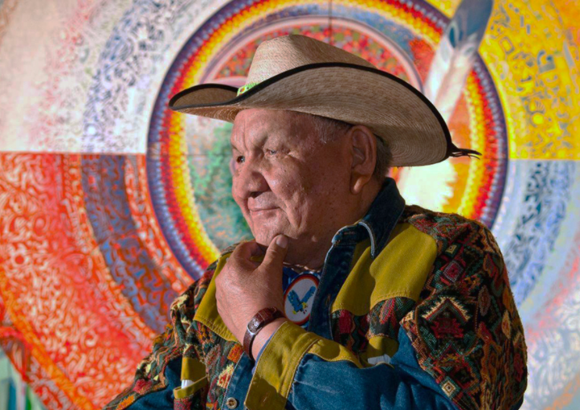
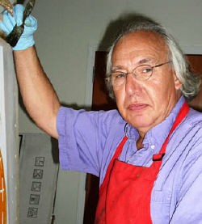
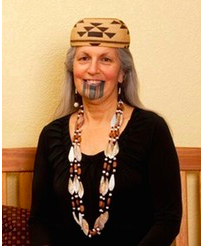
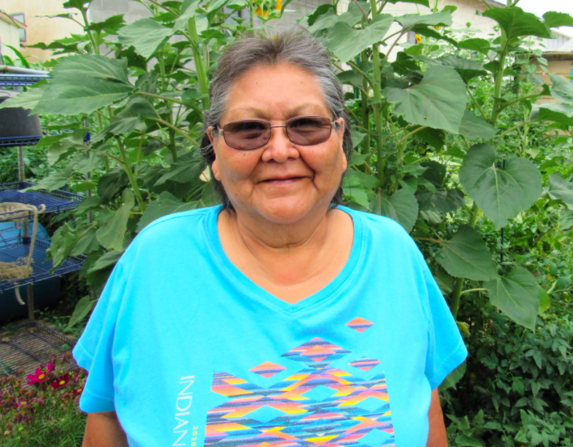
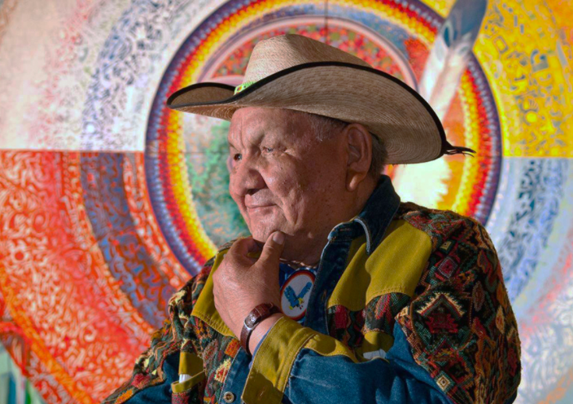
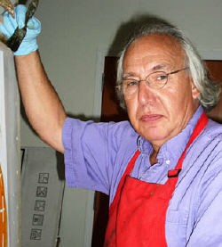
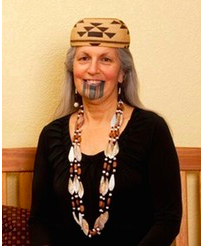
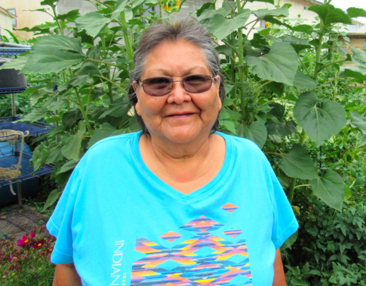

Łichíí IV (Red) by Dakota Mace
This exhibition explores Diné traditions and their relationship to memory and land. Diné beliefs built upon narratives and symbols that teach us hózhó, the balance within ourselves. Through the color łichííʼ (red), I explore the past, present, and future with forms inspired by Kinétah (land). The materials I use, both traditional and non- traditional, are connected to the places they reside, the memories that they hold, and the complexities that they share to our lineage. Art is essential to our beliefs and can be seen as a lifeline within our culture, our land, and the histories that are a part of our identity. With each connection, tradition remains central to the fundamental understanding of the Diné, a line between one generation to the next. It is Nihá (for us). - BY DAKOTA MACE
See more of Dakota Mace's work at her website: https://www.dakotamace.com/
Vanishing (part of the Vanishing Series) by Del Curfman
The Vanishing Series is a response to the perception that Native American culture has or will “vanish.” This idea of disappearance has been a mainstream thought that has only been propagated by Edward Curtis, a photographer who in 1904 produced a collection of photographs titled “Vanishing Race.” My paintings utilize the notion of vanishing through a stark white background crossing over Native American figures as if the sands of time and space are impermanent to a permanent people. Tradition will not be lost. The Vanishing Series aims to belie this exact idea, my artwork has become a vessel of cultural sharing and knowledge. - BY DEL CURFMAN
See more of Del Curfman's work at his website: https://delcurfman.com/
EPOCHS- PEZ LIFE BABY BABEY! by Frank Buffalo Hyde
'Hyde's work, which is anything but subtle regarding the commodification of Indian culture, is explosive, colorful, multilayered and, for all the painterly strokes and shocking hues, surprisingly deliberate. Placing icons of popluar culture into frameworks where the eye expects to see a familiar Anglo lexicon, Hyde asserts an agressive, proactive role for Native American identity in the contemporary world.' -Don't Mess With Frank Hyde: Talking The Nitty-Gritty of Indian Art, by Zane Fischer, SantaFe Reporter
See more of Frank Buffalo Hyde's work at his website: https://frankbuffalohyde.com/
Valley Of the Bluebirds by Tony Abeyta
The release of “Valley Of The Bluebirds” is timely, as we enter into this new season of spring. This landscape represents a rural valley, with the Sangre de Cristo mountains, gentle springs rains and a riverside Orchard of blossoms and tranquil farmlands. An image of sanctuary within a quintessential northern New Mexico mountain village with four blue piñon jays flying overhead. The colors are deep and saturated with great details and the larger scale has made this print a dominating image that can command any wall. this print follows up “Stormy Rivers Bend” which is now sold out. This is one of two limited edition prints that Tony has done to date. - EXCERPT FROM TONY ABEYTA'S WEBSITE
See more of Tony Abeyta's work at his website: http://tonyabeyta.com/

Speaker Mask by Richard Hunt
The speaker is the one who acts as a spokesperson for the Chief at all ceremonial functions. Created with red cedar, paint, horse hair and abalone. - EXCERPT FROM RICHARD HUNT'S WEBSITE
See more of Richard Hunt's work at his website: https://www.richardhunt.com/home
Lucky 13 by Alex Janvier
Alex Janvier, Denesuline, from the Cold Lake First Nations, Treaty 6 Territory, has been a professional artist for several decades. Janvier is renowned for his distince curced lines and use of bright color combinations. His unique abstract style an dhis artistic ideas have blazed the trail for many First Nations and Canadian Artists. - EXCERPT FROM ALEX JANVIER'S WEBSITE
See more of Alex Janvier's work at his website: https://www.alexjanvier.com/
Brown Bird by Roger Broer
As an artist with a limited attention span, I have found that the monotype is a great tool for me to use because it is so immediate. I get an idea, work it though the monotype process, finish the idea in one session, put it down and walk away, and the idea is already recorded. I can come back to it later to enhance add polish or sparkle to what I have already done, but the image was captured in the first few minutes of addressing it. I don’t have to get into the original mind-set again. - ROGER BROER
See more of Roger Broer's work at his website: http://www.rogerbroer.com/home
Pa pi’êep ithívthaneen aachip kúma’araaras…(Long Ago Center of the World People…) by Lyn Risling
My art reflects a connection to my tribal cultures and to the natural world of our indigenous homelands. Using exciting vibrant mixtures of color, I combine elements of tribal designs, traditions, and landscapes, to express a place where the present, past and future come together with Earth and Spirit. My art speaks of renewal and transformation as well as a continuation of old tribal beliefs and ways. This continuum of culture is revealed in my paintings through new expressions of traditional and contemporary experiences, issues and perspectives. - LYN RISLING
See more of Lyn Risling's work at her website: https://www.lynrisling.com/
A Warrior's Hope by Le'Ana Asher
This painting is inspired by what is not only before us but what is behind us. This captures a moment in time where the indigenous man is connected to not only the present but the past. - LE'ANA ASHER
See more of Le'Ana Asher's work at her website: https://leanaasher.com/
Lightning and Water by Irveta Aragon
Navajo woven textile. The designs are based on Navajo eye dazzler geometrics. The colors used represent the power of monsoon rains. Wool warp and weft. - IRVETA ARAGON
See more of Irveta Aragon's work at her website: https://www.irvetaaragon.com/home
 






